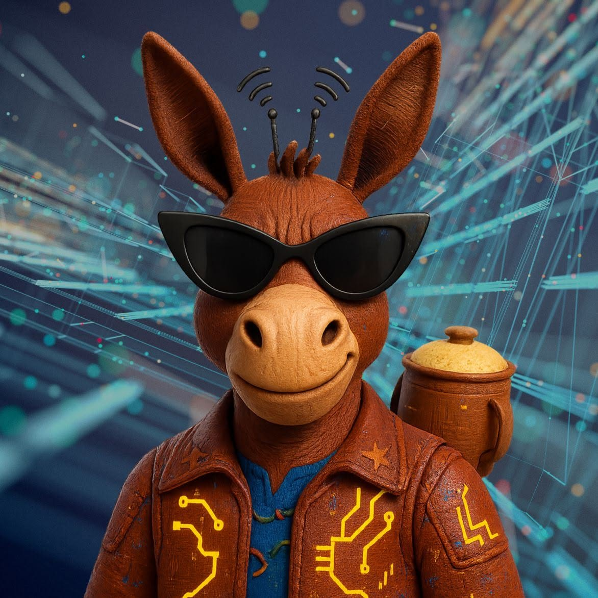

Em breve, uma nova experiênciaO cotidiano já é uma comédia.
A gente só transforma em espetáculo.
Humor inteligente, personagens marcantes e situações que você conhece bem. O universo Mamulesco está em construção.